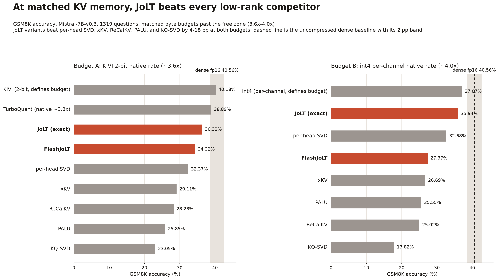
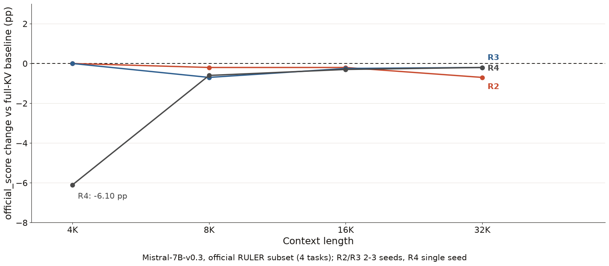
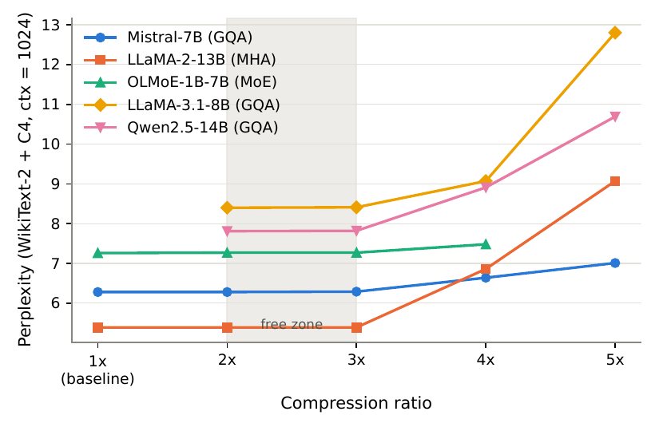
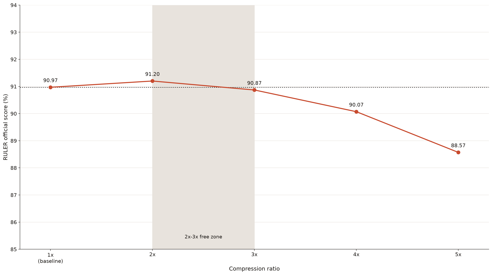
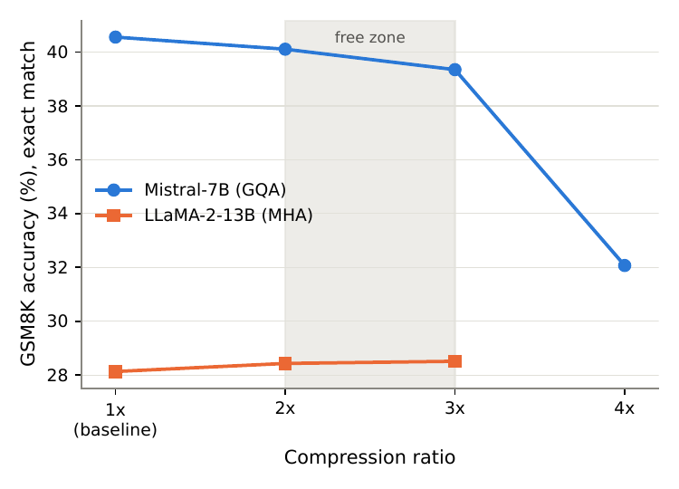
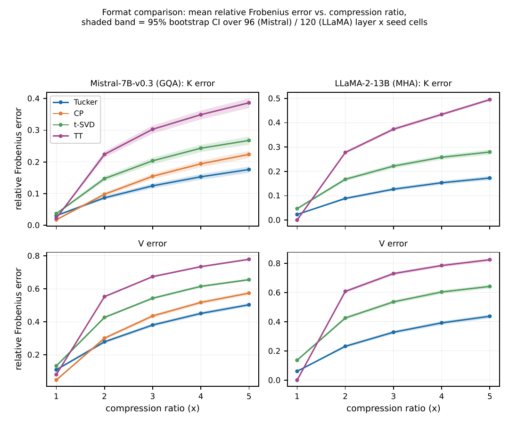
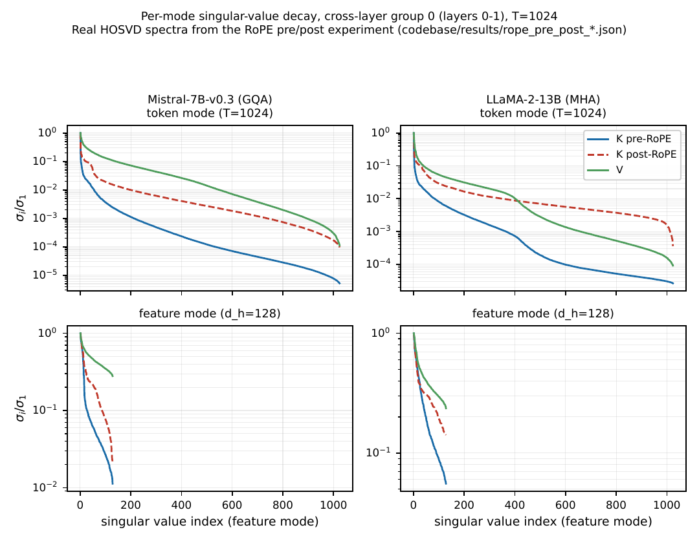

Abstract
The key-value cache dominates inference memory in long-context large language models. Existing compression methods can combine low-rank compression and quantization, but they typically choose ranks and precisions independently or heuristically, so none allocates ranks and bit-widths jointly under one storage budget. We propose JoLT (Joint Lagrangian Tucker), which applies a partial Tucker decomposition to the token and feature axes of a fourth-order layer-group cache tensor, keeps the head and layer axes intact, and restores truncation energy with a rotated low-bit residual. A single Lagrangian dual allocates ranks and residual bit-widths jointly under a shared byte budget. JoLT and its production variant FlashJoLT are near-lossless through 3x compression of the KV cache from short context to 64K; on a RULER subset at 64K with LLaMA-3.1-8B, 4x costs under a point (-0.90 pp) and 5x stays within 2.40 pp. This near-lossless band holds across models and architecture families. For FlashJoLT we present a fused decode kernel that cuts peak decode memory of the KV cache by a measured 3.61x against the dense bf16 cache at context length 8192. Together, these results show that substantial KV-cache compression is possible without retraining while jointly exploiting low-rank and low-bit structure.
Near-lossless: downstream accuracy stays within a prespecified 2 pp noninferiority margin against the dense KV cache on a paired test; perplexity changes are reported separately.
How JoLT works
JoLT groups the layers, treats the keys and the values of each group as separate cells, and lets one Lagrangian multiplier pick every cell's Tucker ranks and residual bit-width under a shared byte budget before anything is compressed. The partial Tucker step keeps heads and layers intact and truncates only tokens and features, the rotated low-bit residual recovers the truncated tail, and FlashJoLT attends directly on the stored core, factors and residual.
Key findings
- Tucker beats CP, TT and t-SVD for runtime KV caches, but any 4D format that compresses the head or layer axis loses to per-head SVD: those axes are index-like and incompressible.
- V is 2-3x harder to compress than K across architectures (median cellwise V/K error ratio 2.47).
- Decomposing K after RoPE costs 22-70% extra reconstruction error, so JoLT operates pre-RoPE.
- On GSM8K with Mistral-7B, 2x compression costs -0.45 pp and 3x costs -1.21 pp, while WikiText2+C4 perplexity at 3x stays within 0.3% of the dense cache on all five tested models.
- At 64K context on the RULER subset with LLaMA-3.1-8B, 3x compression costs -0.10 pp (90.87 vs. 90.97 baseline); on the official RULER subset at 16K/32K with Mistral-7B, 3x costs -0.225 pp pooled (95% CI [-0.9, +0.5] pp).
- FlashJoLT fused decode kernel: 3.61x lower peak decode KV memory vs dense fp16 at context 8192.

At matched KV memory past the free zone, JoLT beats every low-rank competitor by 4-18 pp; fixed-rate quantizers KIVI, int4 and TurboQuant still lead at 3.6-4x.

On Mistral-7B the 4x penalty shrinks from -6.10 pp at 4K to -0.20 pp at 32K while 2x and 3x stay within 0.7 pp throughout. At 64K context on LLaMA-3.1-8B, JoLT is near-lossless at 2x and 3x (+0.23 pp and -0.10 pp), and even 4x costs under a point (-0.90 pp), with 5x at -2.40 pp: three to four times less KV memory with no measurable loss in long-context retrieval.

Perplexity on WikiText-2 + C4 stays flat across a 2x-3x free zone for all five evaluated models (Mistral-7B, LLaMA-2-13B, OLMoE-1B-7B, LLaMA-3.1-8B, Qwen2.5-14B) before rising past 3x.

RULER official score at 64K context with LLaMA-3.1-8B: 90.97 baseline, 91.20 at 2x, 90.87 at 3x, 90.07 at 4x, 88.57 at 5x.

GSM8K exact-match accuracy for Mistral-7B and LLaMA-2-13B holds through the 2x-3x free zone and only degrades at 4x.

Tucker has the lowest reconstruction error of the compared formats (CP, t-SVD, TT) on both K and V, and V error is consistently higher than K error at every compression ratio.

Singular-value decay is markedly slower for K after RoPE than before it, showing why JoLT decomposes K pre-RoPE.
BibTeX
@article{krishnan2026jolt,
author = {Krishnan, Rahul and Schulz, Volker},
title = {A {JoLT} for the {KV} {C}ache: {N}ear-{L}ossless {KV} {C}ache {C}ompression via {J}oint {L}agrangian {A}llocation of {T}ucker {R}anks and a {R}otated {R}esidual for {LLM}s},
journal = {arXiv preprint arXiv:2607.12550},
year = {2026}
}